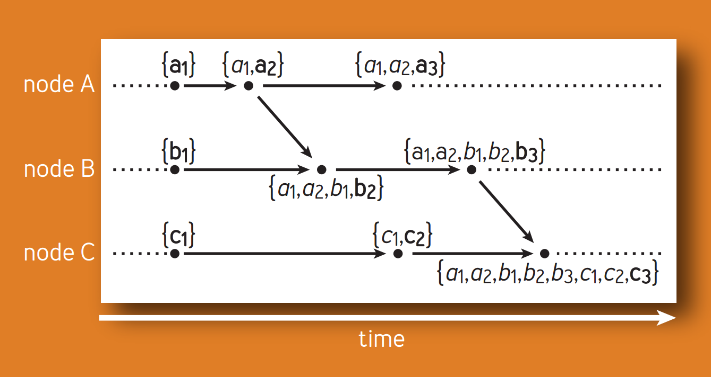
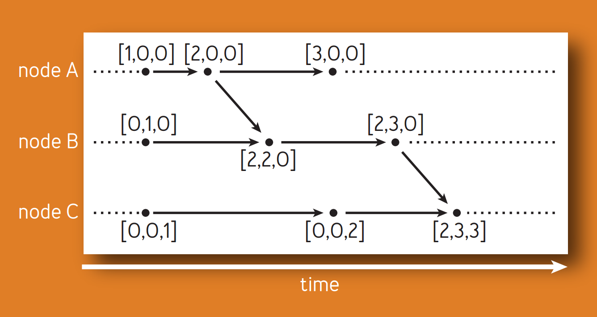

Internal Causality的跟踪（tracking）
consistent prefix read问题
前文中提到了在multi-leader场景中的consistent prefix read问题（异步、半同步方式导致的Replication落后（ Lag）问题），用户B从某partition A的副本读到用户A的消息a后，发送消息b到另一个partition B，此时消息a和消息b仍在leader和各个follower的同步过程中，此时用户C很有可能在partition B的某个副本中读到了消息b，后在partition A的某个副本中读到消息a，两个消息在用户C这里时间上发生了颠倒，违反Causality（注：这里描述的consistent prefix read本质上是用户A和用户B对副本的改变是有internal causality关系的，然而用户C需要使用特定的方法才能判断两次读事件之间的关系，不同的关系需要不同的处理）。
基于上述问题，讨论如何检测系统中两个事件的关系（happened-before、concurrent），可以解决类似户C在每个partition中只读一个副本时，检测读到的消息顺序是违反Causality的，从而避免consistent prefix read。讨论如何检测两个事件对于副本的改变是否冲突（conflict）。
Internal Causality
Lamport的Logical Clock提供了一个不依赖于物理时间但保证causal compliant的全序时间序列方案。他也在论文的最后提到了当系统外部存在happened-before关系时，系统本身是无法知道的，会因此产生新的Causality问题，称为External Causality，解决方法要么把外部关系加入系统（由于无法预测实际不可能），要么使用物理时钟解决。
以下算法仅讨论解决Internal Causality的方案。
基于Unique ID的Causality tracking方案
一种是每个写操作携带唯一的ID（ie. 随机数），这可以解决某些情况下多副本对同一个key的数据并发写时利用last write wins规则进行冲突处理。但是无法解决上述consistent prefix read这种需要明确操作之间关系的问题。（如果确定写操作之间一定没有internal causality关系的话，这个方法能够适用）
所以，需要给予事件描述Causality关系的标识，可以使用物理时间作为标识，提供物理意义上的全序顺序，只要客户端和各个副本之间的物理时钟同步精度足够高，这个全序顺序也是causality compliant的。然而，物理时钟的同步一旦出问题，就无法保证Causality，仍然会出现consistent prefix read类似的问题（Clocks Are Bad, Or, Welcome to the Wonderful World of Distributed Systems）。
进一步，考虑利用不依赖于物理时间的标识。
Lamport Logical Timestamp在Causality tracking中的问题
使用Lamport Logical Timestamp作为写操作的标识，基于Lamport Timestamp给出的全序顺序，该顺序一定是causality compliant的，然而这个全序顺序无法区分happened-before关系和concurrent关系，假设事件A happened before 事件B，可得$A\rightarrow B$，反之不成立。对于需要判断是否concurrent的情况不适用（ie. 针对concurrent情况做特别处理，比如merge这些结果让应用层去处理）。
Causal Histories以及Vector Clocks
Lamport Timestamp解决了Causality compliant，但留下了事件之间关系无法区别的问题。回顾一下Lamport Timestamp算法，在同一个进程中的连续、相邻的两个事件之间每次时间戳加1，如有其它进程发送事件，取该事件时间戳加1和当前事件的最大值。假设两个进程之间没有任何事件发生，所有事件都在他们本地进程发生，那么可以找出两个分别来自这两个进程的事件，他们是“可比较的”（comparable），然而他们是concurrent关系。问题在于，每个事件所携带的时间戳（数字），并不能唯一确定这个事件，进程1中会有携带这个时间戳的事件，进程2中可能也有相同时间戳的事件。另外，Causality是一种依赖关系，如果把事件之间的偏序关系看成一个个事件图（DAG）（注：也可能是chain），那么如果事件2作为事件图的终点（出度为0）包含了事件1，意味着时事件1 happened before 事件2，如果事件1作为root的事件图包含了事件2，意味着事件2 happened before 事件1，否则两者是concurrent关系，所以，加入选择新的<进程ID + timestamp>作为新的timestamp并在每个事件节点记录下该事件的子图（sub graph），即能区分事件之间的关系（注：图中的节点有父子关系，而这里其实并不需要这种父子关系，只需要判断其它事件是不是在子图中即可，实现可用数组或向量表示，但是在这里用图我认为更容易理解本质问题）。这就是Causal Histories方法以及其“压缩版”Vector Clocks的原理。
其中，如果事件图以数组形式记录，就是Causal histories方法。（注：Reinhard Schwarz在论文中首先提出Causal histories方法，作为能最精确的描述causality关系的模型，之后在此基础上进行改进。因此，他直接将每个事件的Causal History定义成以该事件为“终点”的图上的所有事件的集合）

Causal histories方法的问题在于history集合随着时间的增长、事件的个数不断增加，集合中元素数量巨大。实际是不可用的。

实际上，对于事件图来说，其中的许多事件是冗余信息，对于任意一个事件$E_i$，在同一个进程中，所有$E_j(j\leq i)$的时间都happened before $E_i$，因此，只需要记录每个进程中最后一个happened before 事件图“终点”事件的事件即可，这样每个事件的Causal histories集合中元素数量减少到最多为进程数量的个数，每个事件只需维护一个进程个数大小的向量即可。这就是Vector Clock（论文中称为Vector Time）。由于去掉了一些冗余信息，当事件$E_a$是否happened before 事件$E_b$时，可能无法从$E_b$的Causal histories中找到$E_a$，但只要在$E_b$的history向量中找到$E_a$所在进程的最后一个（last）事件timestamp大于等于$E_a$的timestamp，即表明$a\rightarrow b$。
此外，基于前提：
即便进程数目很大，互相通过消息传递进程数量是较小的
所以在传递消息时，携带的timestamp（向量）是可以压缩的（不记录值为0的项），用{i, num of i}代替，可以进一步减少网络带宽需求（注：这样压缩是没有信息损失的，不会出现无法判断两个事件causality关系的情况）。
总结
要解决分布式系统中由Internal Causality不一致导致的问题，就需要准确跟踪系统中的事件关系。使用UUID、物理时间作为事件的timestamp实现简单，但是无法准确描述事件之间的causality关系（物理时间的高精度同步也有现实的困难）。从Lamport Timestamp出发，利用了Lamport Clock对于事件causality关系的记录原理，又对Lamport Clock无法直接区别事件causality关系的特点进行改进，通过记录每个事件的事件图，得到了Causality histories方案，能准确判断任意事件之间的causality关系，同时，进一步优化空间复杂度、减小网络带宽需求，对事件图和timestamp进行压缩，得到Vector clock方案。
参考资料：
[1] Lamport, L. 1978. Time, clocks, and the ordering of events in a distributed system.
[2] John Daily. 2013. Clocks Are Bad, Or, Welcome to the Wonderful World of Distributed Systems.
[3] Nuno Preguica. 2010. Dotted Version Vectors: Logical Clocks for Optimistic Replication.
[4] Carlos Baquero. 2016. Why Logical Clocks are Easy.
[5] Martin Kleppmann. 2017. Designing Data-Intensive Applications.
[6] Sean Cribbs. 2014. A Brief History of Time In Riak.
[7] Reinhard Schwarz. 1994. Detecting Causal Relationships in Distributed Computations:In Search of the Holy Grail